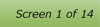
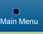
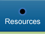
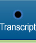
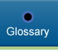
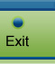
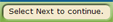

|
Screen header: Every screen displays a header for the title of the module and the lesson or test. This helps you keep track of where you are in the course. |
|  |
Screen numbers: The screen numbers show you where you are within a lesson or test. |
|  |
Main Menu button: The Main Menu button allows you to return to the course menu. |
|  |
Resources button: The Resources button opens a window and displays a list of references. |
|
Audio button: The Audio button turns the audio on or off. |
|  |
Transcript button: The Transcript button opens the Closed Caption window for screens that contain audio or video. |
|  |
Glossary button: The Glossary button opens a window and displays a list of terms or acronyms and the associated definitions. |
|
Help button: The Help button opens a window and displays navigation assistance. |
|  |
Exit button: The Exit button closes the lesson window. It allows you to bookmark your position in the course. Make sure you exit this way so that your place in the course will be marked for your return. |
|  |
Prompt area: This area of the screen displays instructions on completing the activities or interactions on the screen. |
|
Back button: The back button takes you to the previous screen. |
|
Next button: The next button takes you to the next screen. |
|
Lesson Menu button: The lesson menu button displays the lessons in the module and allows you to directly access them. |